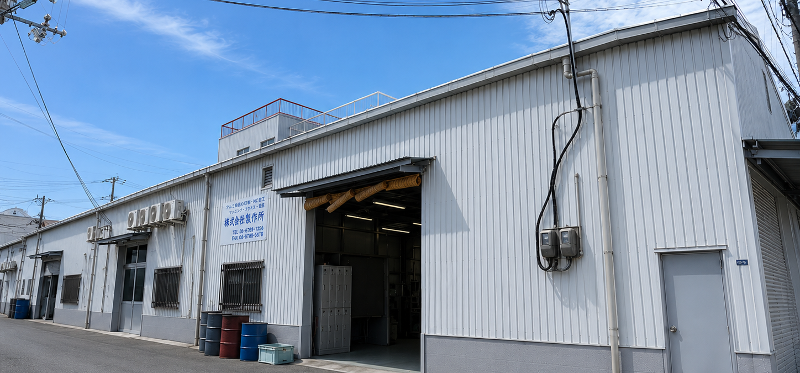

| 会社名 | 株式会社南越製作所 NANETSU CO.,Ltd. |
|---|---|
| 代表者 | デイン バン ファン DINH VAN PHAN |
| 設立 | 平成19年（2007年） |
| 所在地 | 〒577-0824 大阪府東大阪市大蓮南5丁目10-8 |
| 電話番号 | 06-6727-7866 |
| FAX | 06-6727-7867 |
| メール | nanetsu.seisaku@gmail.com |
| 事業内容 | 機械加工 マシニングセンター加工 NC旋盤加工 |
| 営業時間 | 平日 8:00 - 17:00 定休日：土・日・祝日 |